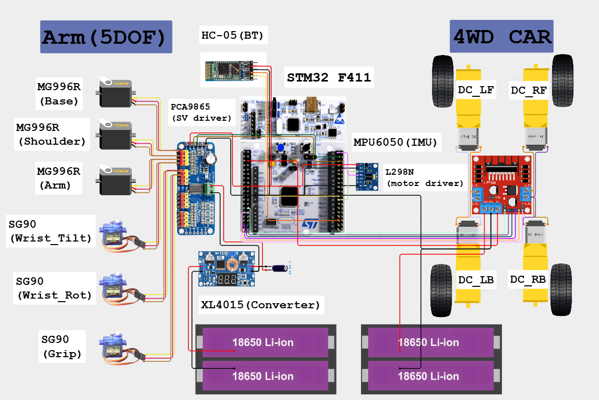
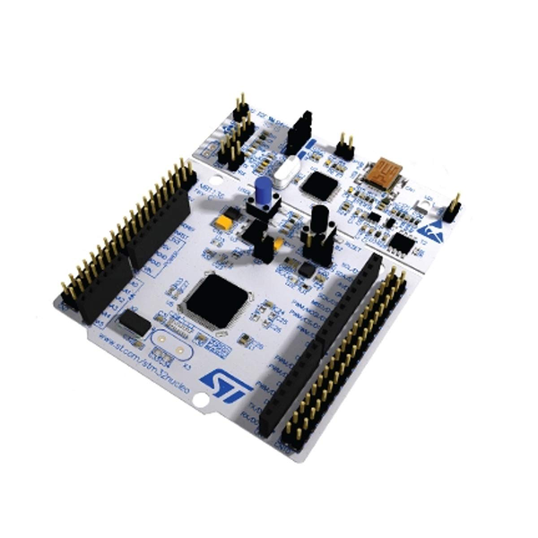
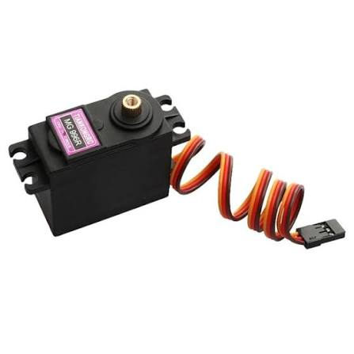
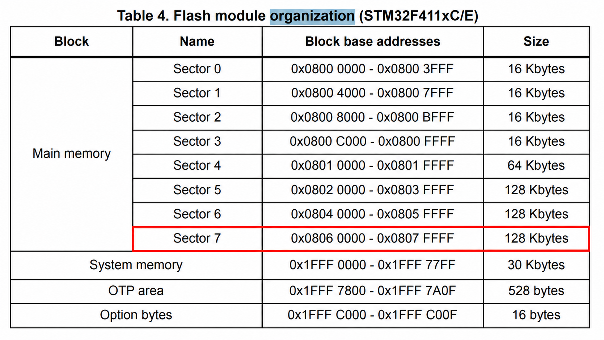

04.01
Flutter 주행·로봇팔 제어 앱
차량 주행과 관절 조작, 티칭·시퀀스 기능을 Flutter 앱으로 구성했습니다. 사용자의 입력을 Bluetooth 명령으로 전달해 STM32 제어와 연결했습니다.
01 / OVERVIEW
4륜 이동 플랫폼에 5자유도 로봇팔을 탑재하고, Flutter 앱에서 주행·관절 조작·티칭을 통합 제어하는 모바일 매니퓰레이터입니다. 기록한 동작과 설정을 STM32 내부 Flash에 저장해 전원을 다시 켠 뒤에도 불러와 재생할 수 있도록 구현했습니다.
앱 제어 주행·물체 운반 시연
03 / SYSTEM

04 / IMPLEMENTATION
차량 주행과 관절 조작, 티칭·시퀀스 기능을 Flutter 앱으로 구성했습니다. 사용자의 입력을 Bluetooth 명령으로 전달해 STM32 제어와 연결했습니다.
5자유도 로봇팔과 그리퍼의 목표 자세를 6개 서보 채널로 제어했습니다. STM32에서 목표 값을 펄스폭·카운트로 변환하고 I2C로 PCA9685에 전달해 채널별 PWM을 출력했습니다.



20ms 주기에서 1,056µs를 12비트 카운트로 환산하면 약 216입니다. 채널 레지스터에 기록한 값으로 PCA9685가 PWM을 출력합니다.
관절 자세를 순서대로 기록해 시퀀스로 저장하고 다시 불러와 재생하도록 구현했습니다. 내부 Flash에 12개 시퀀스와 시퀀스당 최대 30개 Waypoint, 설정값을 보존하는 구조로 구성했습니다.
주행 중 목표 Yaw와 현재 Yaw의 차이로 좌우 모터 출력을 보정했습니다. 전진·후진 구간에서 진행 방향을 유지하도록 PID 직진 보정을 적용했습니다.
05 / PROBLEM SOLVING

